Overview
Sections
This tutorial will guide you through the initial steps in getting your audio from Wwise to work in CRYENGINE using the audio system.

Initial Steps with Wwise for CRYENGINE
Setting up Wwise for CRYENGINE
Enable the Wwise middleware in CRYENGINE's Console by setting the s_ImplName CVar to CryAudioImplWwise. As an alternative add following line to your system.cfg or user.cfg file (located in the root folder of the CRYENGINE):
s_ImplName = CryAudioImplWwise
Wwise Project and Soundbank Locations
When using Wwise with CRYENGINE, you can locate the Wwise specific data in the following locations:
Soundbanks:
<project folder>/assets/audio/wwiseIn release 5.5 the location for Soundbanks changed to /<project folder>/<project assets folder>/audio/wwise/assets, where <project assets folder> refers to the assets folder set in the project's .cryproject file.
- Wwise Project:
<ProjectFolder>/assets/audio/wwise_project
You can select a different path for your Wwise project by going to Edit -> Preferences in the Audio Controls Editor. You can then type the desired path or browse for the folder with the Browse button:
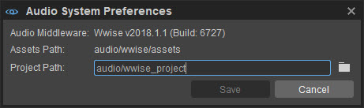
By default, CRYENGINE checks these folders to locate all the Wwise Controls and Soundbanks and displays those files in the Audio Controls Editor.
It is recommended that you maintain the default folder structure since .bat files in the CrytekScripts folder would need to get updated as well.
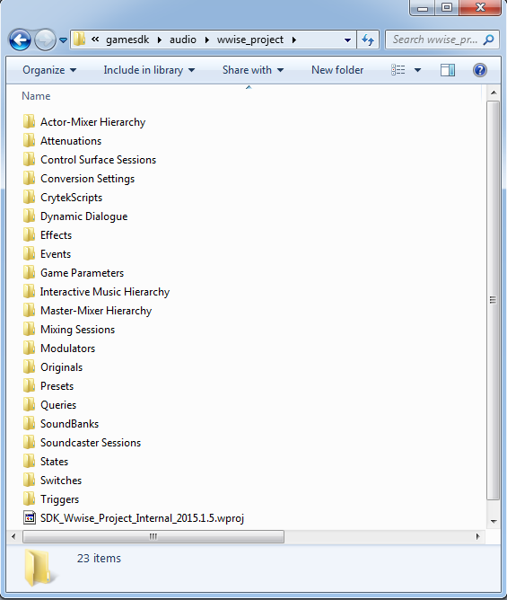
When you ship your game, make sure you include the Soundbanks in the game folder as they contain all data from the Wwise project.
Verifying the Supported Wwise Version
Before you set up your Wwise project, make sure that you are using the correct version of Wwise with CRYENGINE. The CRYENGINE is always updated to support the latest version of Wwise.
To make sure that you are using the correct version, open the Console in CRYENGINE, and then type s_DrawAudioDebug a. Now, you can see (in the top left hand corner) the current version of Wwise that is supported by the audio system in your CRYENGINE build.
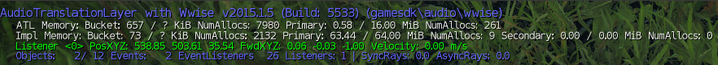
You can download all Wwise versions from here.
Creating an Audio Setup for CRYENGINE in Wwise
If you are new to Wwise, it is recommend that you read Audiokinetics Wwise Get Started Guide. This will help you to get familiar with the concepts of the Wwise software. You can also complete the basic Wwise 101 course that is available here.
Creating a Sound Object in Wwise
In Wwise, you can import sounds into the Actor-Mixer Hierarchy by dragging or dropping the audio files or by using the Import function (Project -> Import Audio Files).
After you have imported an audio file in .wav format, Wwise will create a new sound object for it.
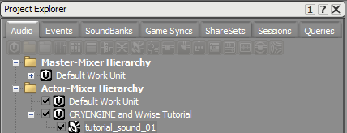
For each sound object in Wwise, you can specify multiple parameters in the Property Editor that will open when you select the object in the Project Explorer. In order to access the Property Editor, make sure that you are using the Designer Layout in Wwise. This can be found and activated under Layouts in the menu bar.
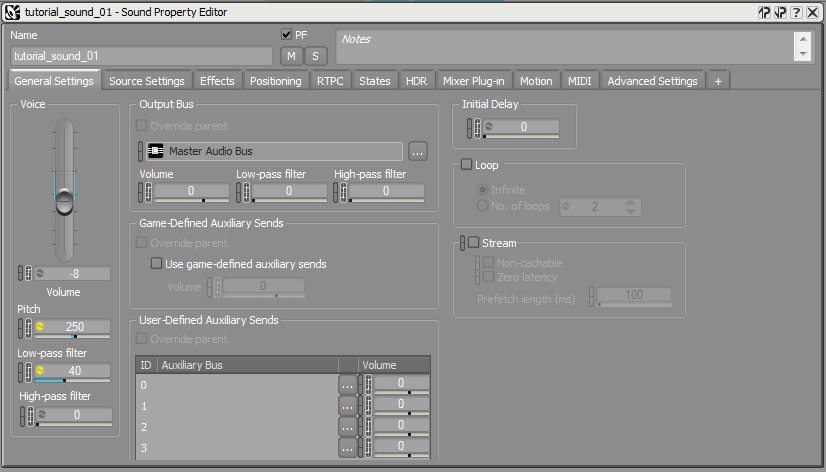
In the Property Editor, you can change parameters such as volume, pitch, low/high-pass filtering, routing and positioning of the sound SFX object.
Creating an Event in Wwise
In order to make your imported sound visible to CRYENGINE's audio system, an event needs to be created for it within Wwise. These events can perform multiple actions; the most basic and often used is the Play-Action which plays back an object from the Actor-Mixer Hierarchy.
To create an event for your sound object, right-click on the sound object in the Actor-Mixer-Hierarchy, and then select New Event -> Play.
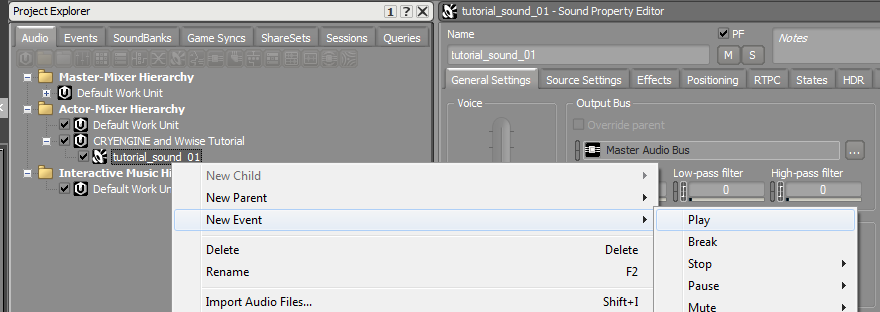
If you now look in the Events tab of the Project Explorer window, you can see your newly created event.
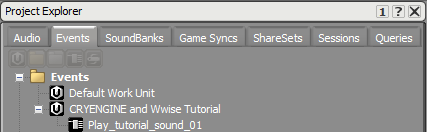
It is recommended that you use prefixes for events as they can perform multiple actions. For example, when stopping a sound, events can be called as Stop_(...) and so on in order to enhance their readability in both Wwise and CRYENGINE.
Creating a Soundbank in Wwise
To integrate the new event into your game, you will now have to create a Soundbank in Wwise that can be loaded by CRYENGINE. In Wwise, open the Soundbank tab and click the Create new SoundBank button to create a new bank.
Now you can populate the SoundBank with the audio content that you have created. The easiest way to do this is to drag the Work Unit, in which you have created your event into the SoundBank's Property Editor. You can open the Property Editor by double-clicking on the SoundBank object.
If you add the Work Unit from the Events tab in the Project Explorer to the SoundBank, all of its events associated sound objects and media files will be automatically included with it.
Now all newly created events within the Work Unit will also be automatically included in your SoundBank whenever you generate it.
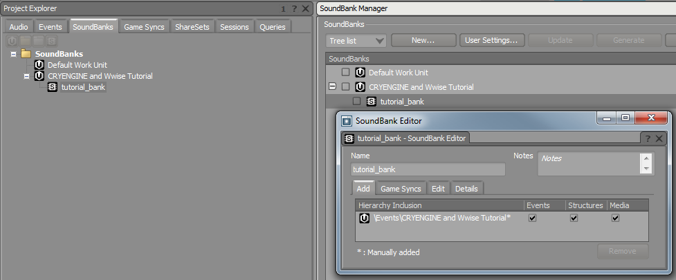
Remember that the SoundBanks need to be located in <ProjectFolder>/assets/audio/wwise in order to be visible to the Audio Controls Editor.
You can set up Wwise to automatically generate the SoundBanks in the correct location by entering ../wwise/ as the path under Project Settings -> SoundBanks.
This will generate all Soundbanks in the location <ProjectFolder>/assets/audio/wwise when your wwise_project is correctly located in <ProjectFolder>/assets/audio/wwise_project.
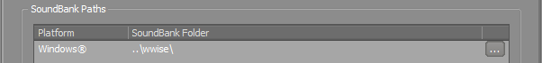
Connecting Wwise Controls to the Audio System
Now that you have created your setup in Wwise, the Audio Controls Editor will be able to recognize the Wwise Controls and SoundBanks. You can open CRYENGINE and go to Tools -> Audio Controls Editor.
Now the Audio Controls Editor displays all Wwise Controls contained in your Wwise Project as well as your generated SoundBanks. You can now connect them to the audio system in order to integrate them into your level in CRYENGINE.
You need to create a new folder in the Audio Controls Editor by selecting the +Add drop-down menu and then select Folder from the list.
After you create a folder, drag and drop the Wwise Controls into the new folder on the audio system Controls side. CRYENGINE will automatically create the corresponding connected audio system Controls and name them after their Wwise counterparts.
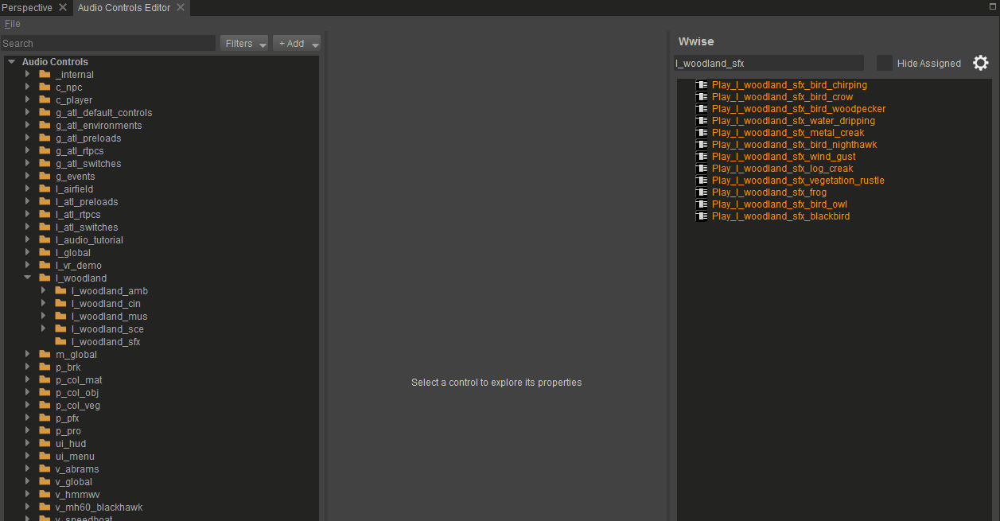
You may notice that two types of audio system Controls have been created, a Trigger and a Preload.
The audio system Trigger will be used to call the Wwise event in your game, while the audio system Preload will be used to load the Wwise SoundBanks so that all data for the event is included in memory.
CRYENGINE requires the Wwise Soundbank containing your event data to be loaded in order to play the audio sound in your level. Therefore, make sure to connect your Wwise SoundBanks to Preloads and update them when you add new content in Wwise.
For more information on creating Soundbanks in Wwise, please refer here.
In the audio system Preload, make sure that the Auto-Load checkbox is activated and leave the Context on Global for now. For more information on using Contexts in the Audio Controls Editor, please refer here.
Placing an Audio System Trigger in the Game
If you have followed the above steps correctly, you can now select your audio system trigger in the Audio Controls Editor and play it back on an audio entity. You can also pre-listen to your Triggers in the Audio Controls Editor by right-clicking on them and selecting Execute Trigger.
In order to play your sound in the game, you need to place an audio entity in the level which will be executing the Audio Trigger during the game play. For each level, it is recommended to create a dedicated Audio Layer which contains all your audio data. You need to add a new layer in the Level Explorer and name it Audio.

As long as the Audio layer is active (double-click on it and you'll see a blue V showing that the layer is active), all the entities you are placing in the level are going to be included in the layer. Now you can go back to the Create Object tab and select the Audio Trigger Spot entity in the Audio tab and place the entity in the level.
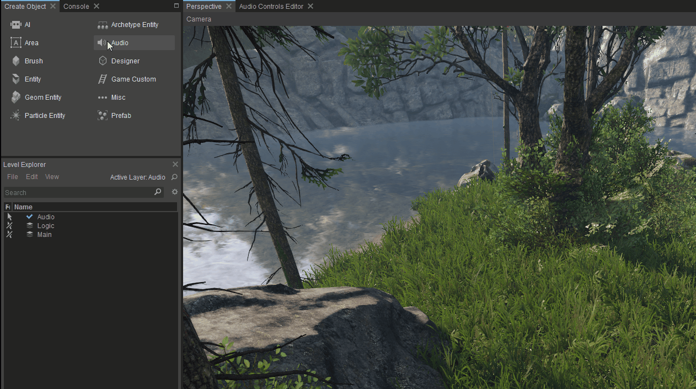
It is recommended to name your audio entities with abbreviations to improve readability in large projects. For example, the Audio Trigger Spot uses the ATS as abbreviation. Therefore, a frog idle sound could be called ATS_frog_idle on the Audio Trigger Spot in the level.
If you have followed the above steps correctly, you can now select your created audio system Trigger in the Properties section of the Audio Trigger Spot. It will be played back as soon as the Audio Trigger Spot entity is enabled.
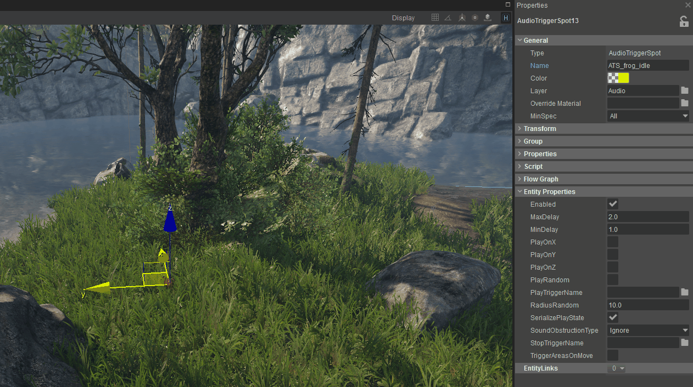
In Wwise, you do not need to create a Stop Trigger when you want to end the sound while the StopTrigger is executed. When the StopTrigger is executed, CRYENGINE automatically stops playing the Wwise audio event if the StopTriggerName is left empty. This is important to remember as the behavior is same in all places in CRYENGINE where a StopTrigger can be used.
For more information on the functionality of the Audio Trigger Spot in combination with Wwise, please refer here.